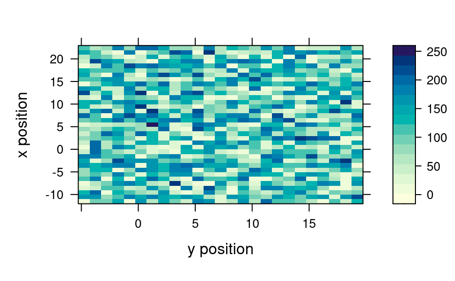
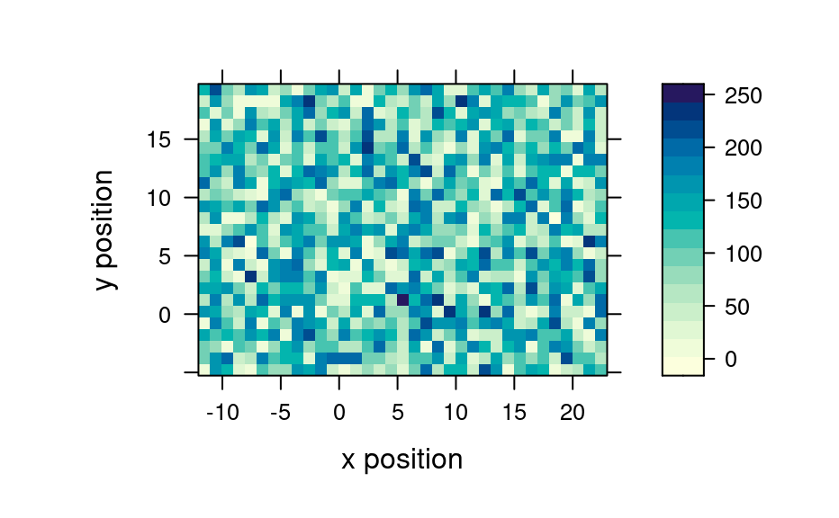
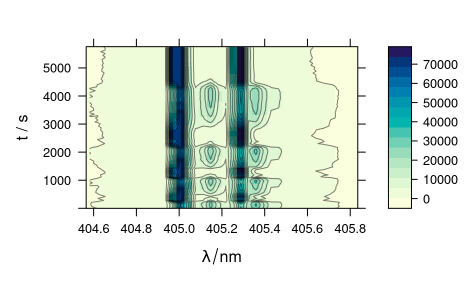
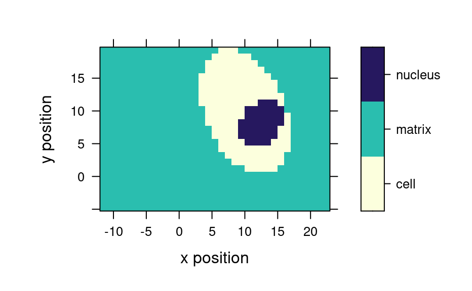
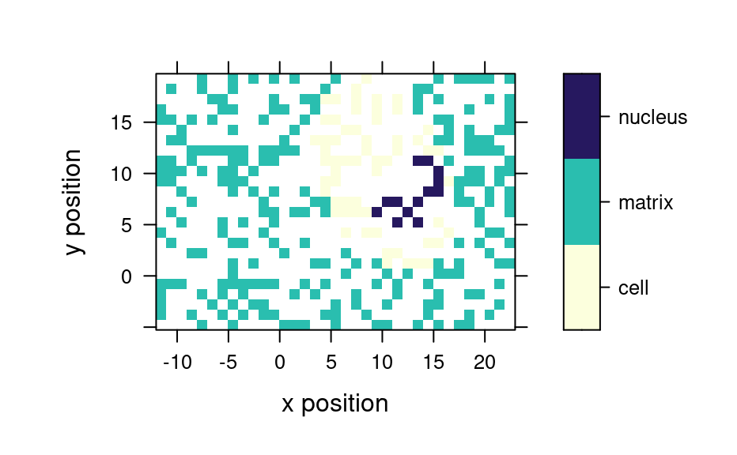

R/plot_map.R, R/levelplot.R, R/map_identify.R, and 1 more
levelplot.Rdlattice::levelplot() functions for hyperSpec objects.
An image or map of a summary value of each spectrum is plotted.
Spectra may be identified by mouse click.
plotmap(object, model = spc ~ x * y, func = mean, func.args = list(), ...)
# S4 method for formula,hyperSpec
levelplot(
x,
data,
transform.factor = TRUE,
...,
contour = FALSE,
useRaster = !contour
)
# S4 method for hyperSpec,missing
levelplot(x, data, ...)
map.identify(
object,
model = spc ~ x * y,
voronoi = FALSE,
...,
tol = 0.02,
warn = TRUE
)
plotvoronoi(
object,
model = spc ~ x * y,
use.tripack = "DEPRECATED",
mix = "DEPRECATED",
...
)the hyperSpec object
formula specifying the columns of object that are to be
displayed by lattice::levelplot()
Before plotting, plotmap applies function
func with the arguments given in the list func.args to each
of the spectra. Thus a single summary value is displayed for each of the
spectra.
This can be suppressed manually by setting func to NULL. It is automatically suppressed if
.wavelength appears in the formula.
further arguments are passed down the call chain, and finally
to lattice::levelplot()
If the color-coded variable is a factor, should
trellis.factor.key() be used to compute the color coding and
legend?
Should the plot for identifying spectra by mouse click be
produced by plotmap (default) or plotvoronoi?
tolerance for map.identify as fraction of the viewport
(i.e. in "npc" units)
should a warning be issued if no point is within the specified tolerance? See also details.
(DEPRECATED) See latticeExtra::panel.voronoi for details.
(DEPRECATED) This argument is deprecated due to deprecation of
argument use.tripack.
map.identify returns a vector of row indices into
object of the clicked points.
The other functions return a lattice object.
The model can contain the special column name .wavelength to specify
the wavelength axis.
plotmap, map.identify, and the levelplot methods internally use the same
gateway function to lattice::levelplot(). Thus transform.factor can be used
with all of them and the panel function defaults to lattice::panel.levelplot.raster()
for all three. Two special column names, .rownames and .wavelength may be used.
levelplot plots the spectra matrix.
plotvoronoi calls plotmap with different default settings, namely the
panel function defaults to latticeExtra::panel.voronoi().
latticeExtra::panel.voronoi() depends on either of the packages interp or deldir
being installed. For further information, please consult the help page of
latticeExtra::panel.voronoi().
map.identify() calls plotmap() and plotvoronoi(), respectively and waits for
(left) mouse clicks on points. Other mouse clicks end the input.
Unlike lattice::panel.identify(), the indices returned by map.identify are in
the same order as the points were clicked. Also, multiple clicks on the same point are returned
as multiple entries with the same index.
map.identify uses option debuglevel similar to identify_spc():
debuglevel == 1 will plot the tolerance window if no data point was inside (and
additionally labels the point) while debuglevel == 2 will always plot the tolerance
window.
The map.sel.* functions offer further interactive selection, see
map.sel.poly().
vignette(plotting), vignette(hyperSpec)
trellis.factor.key() for improved color coding of factors
if (FALSE) {
vignette(plotting)
vignette(hyperSpec)
}
levelplot(spc ~ y * x, faux_cell[, , 1003]) # properly rotated
#> Warning: device support for raster images unknown, ignoring 'raster=TRUE'

plotmap(faux_cell[, , 1003])
#> Warning: device support for raster images unknown, ignoring 'raster=TRUE'

# plot spectra matrix
levelplot(spc ~ .wavelength * t, laser, contour = TRUE, col = "#00000080")

# see also plotmat
plotmap(faux_cell, region ~ x * y)
#> Warning: device support for raster images unknown, ignoring 'raster=TRUE'

# Voronoi plots
smpl <- sample(faux_cell, 300)
plotmap(smpl, region ~ x * y)
#> Warning: device support for raster images unknown, ignoring 'raster=TRUE'

plotvoronoi(smpl, region ~ x * y)
#> Warning: device support for raster images unknown, ignoring 'raster=TRUE'